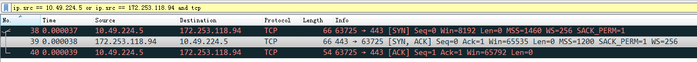
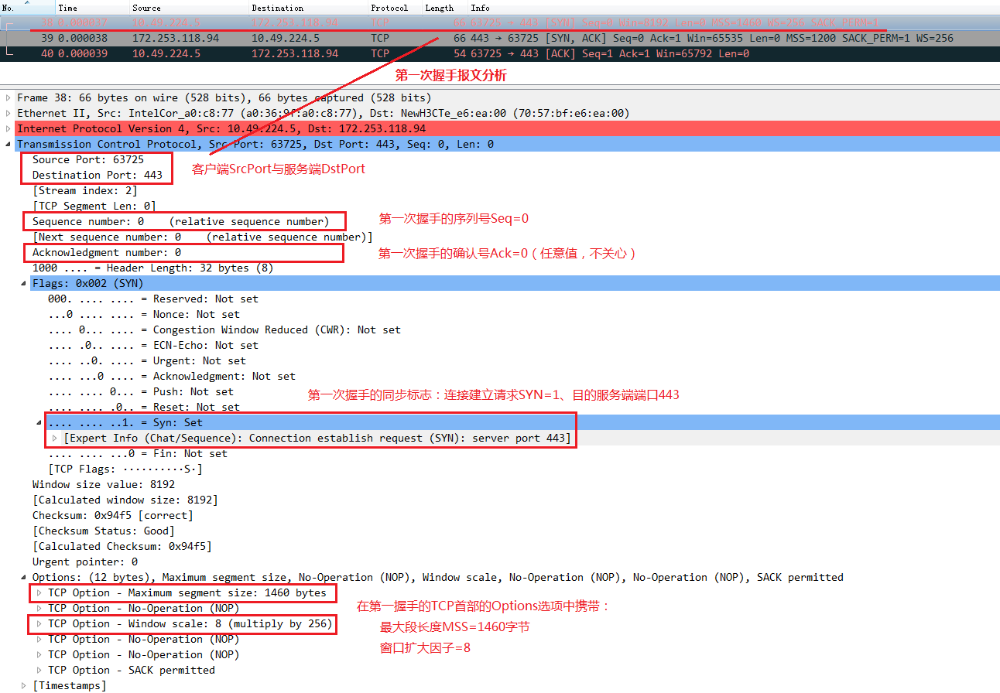
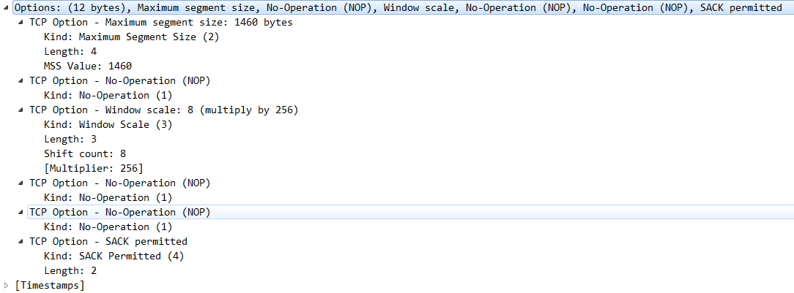
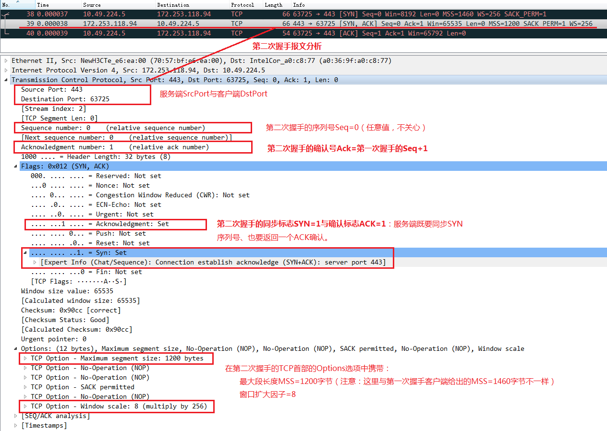
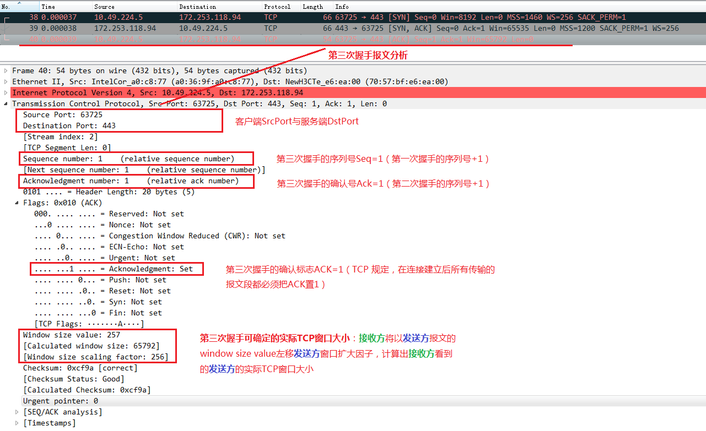
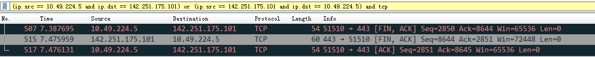
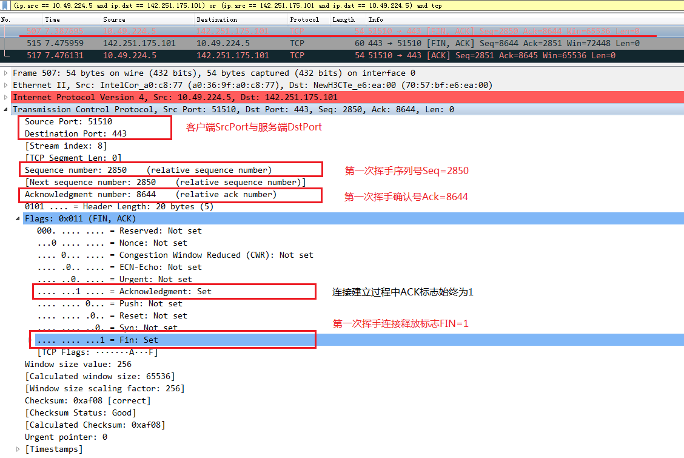
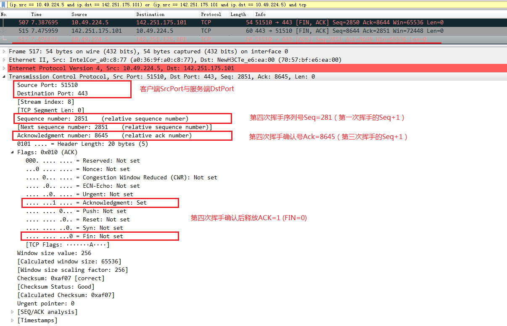

关于 TCP 三次握手与四次挥手的过程与原因，请看 这里 。本文主要参考 用 wireshark 抓包来详细分析 TCP 三次握手和四次挥手过程，也亲自进行一次抓包、分析。
TCP 三次握手抓包分析
Wireshark 抓包
首先开启 Wireshark 监听的网卡，然后访问某个 https 博客，输入简单的过滤规则进行过滤，抓包如下：
第一次握手
首部解析
假设 A 为客户端，B 为服务端。
第一次握手：A 向 B 发送连接请求报文，SYN=1, ACK=0，并选择一个初始的序号 x（如抓包中的 Seq=0）。
也就是说，第一个包中 SYN 位被置 1，表示要和目的主机同步序列号，同时附加并协商 MSS 信息、窗口扩大因子等信息。
Options 解析
在 TCP 三次握手的第一次握手（即客户端发送的 SYN 报文）中，TCP 首部的 Options 字段通常会被填充。这些选项字段用于协商连接参数，以确保通信双方能够在最佳状态下进行数据传输。常见的选项包括：
最大段大小（MSS - Maximum Segment Size）：
- 作用：告知对方本端可以接收的最大 TCP 段大小（不包括 IP 和 TCP 首部）。
- 格式：
kind 2,length 4, 后跟 2 个字节表示的最大段大小（以字节为单位）。 - MSS 值主要基于：本地网络的 MTU（Maximum Transmission Unit，最大传输单元）减去 IP 首部和 TCP 首部的大小。
窗口扩大因子（Window Scale）：
- 作用：扩大 TCP 窗口的大小，从而提高高带宽 - 延迟网络的性能。
- 格式：
kind 3,length 3, 后跟 1 个字节的窗口缩放因子。
时间戳（Timestamps）：
- 作用：用于更准确地测量往返时间（RTT）并防止序列号回绕的问题。
- 格式：
kind 8,length 10, 后跟两个 4 字节字段，分别表示发送方的时间戳值（TSval）和接收方最近时间戳回显（TSecr）。
选择性确认许可（SACK Permitted）：
- 作用：通知对方，发送方支持选择性确认（Selective Acknowledgment）。
- 格式：
kind 4,length 2。
NOP（No-Operation）：
- 作用：用于填充和对齐。
- 格式：
kind 1。没有长度字段。
第二次握手
第二次握手：B 收到连接请求报文，如果同意建立连接，则向 A 发送连接确认报文，SYN=1, ACK=1, ack=x+1（抓包中的 ack=1），同时也选择（随机）一个初始的 seq=y（抓包中的 seq=0）。
可能你已经注意到，第二次握手服务端填充的 MSS=1200 字节，而第一次握手客户端填充的 MSS=1460 字节。两个 MSS 值不一样，会如何协商呢？
- 如果第二次握手的 MSS 小于第一次握手的 MSS：客户端在后续发送的 TCP 段中会遵循服务端 MSS 大小，以避免 IP 分片。
- 如果第二次握手的 MSS 大于第一次握手的 MSS：客户端在后续发送的 TCP 段中依然会使用自己的 MSS 大小，而不会超过自己声明的 MSS。
不同的 MSS 值在 TCP 三次握手的第一次和第二次握手中是正常的，并且反映了双方位于不同网络环境中的实际情况。最终，客户端将根据服务端的 MSS 设置其发送 TCP 段的大小，从而 确保最大限度地利用网络资源并避免不必要的 IP 分片。
第三次握手
第三次握手：A 收到 B 的连接确认报文后，还要向 B 发出确认，ACK=1, ack=y+1, seq=x+1。
完成三次握手后，就建立了 TCP 连接，之后就可以正常的进行数据发送和接收。
可以发现，第三次握手已经没有 Options 选项了，但是有实际的 Window size value。那么，实际的窗口大小是如何计算的呢？
在 TCP 三次握手过程中，窗口扩大因子（Window Scale）用于扩大 TCP 窗口的大小，从而支持更高的吞吐量。窗口扩大因子是在第一次和第二次握手过程中协商的，过程如下：
- 第一次握手（客户端发送 SYN 报文）：客户端声明其希望使用的窗口扩大因子。例如，窗口扩大因子是 8。
- 第二次握手（服务端发送 SYN-ACK 报文）：服务端同样声明其希望使用的窗口扩大因子。例如，窗口扩大因子也是 8。
当双方同意使用窗口扩大因子以后，广义（实际）的 TCP 窗口大小将以左移的方式进行扩展。
窗口大小的实际缩放值取决于 TCP 首部中的 Window size 字段和协商的窗口扩大因子，其计算公式如下：ActualWindowSize = WindowSize << WindowScale，即接收方将以发送方报文的 WindowSize 左移发送方 WindowScale 来计算发送方的实际窗口大小（可以确定对方的接收能力）。
TCP 协议规定，双方将使用各自保存的对方的窗口扩大因子来解释对方的窗口大小。也就是说，数据传输中，每一方用对方声明的因子来计算对方接收窗口的大小。
那么，双方将对方的扩大因子存储在哪里？在三次握手完成后，双方会使用存储在 TCP 控制块（TCP Control Block, TCB）中的对方窗口扩大因子来计算对方报告的窗口大小。
原始数据包
1 | // 第一次握手 |
TCP 四次挥手抓包分析
当完成数据发送后，双方要结束对话，由于 TCP 连接是全双工的，因此每个方向都必须单独进行关闭。这个原则是当一方完成它的数据发送任务后，就能发送一个 FIN 来终止这个方向的连接。收到一个 FIN 只意味着这一方向上没有数据流动，一个 TCP 连接在收到一个 FIN 后仍能发送数据。首先进行关闭的一方将执行主动关闭，而另一方执行被动关闭，故需要经过四次挥手完成 TCP 的断开。
Wireshark 抓包
首先开启 Wireshark 监听网口，然后访问某个博客，输入简单的过滤规则进行过滤，首先找到四次挥手报文，标志就是 FIN。这里只有三个包，是服务端的第二次挥手与第三次挥手合并为一个包发送了。
可以看到，源和目的端分别发送了一个 FIN 报文，加上接下来的 ACK 报文，就是四次挥手结束连接。
第一次挥手
A 发送连接释放报文，FIN=1。
第二三次挥手
B 收到之后发出确认，此时 TCP 属于半关闭状态，B 能向 A 发送数据，但是 A 不能向 B 发送数据。
当 B 不再需要连接时，发送连接释放报文，FIN=1。

现实场景中，第二次和第三次挥手（ACK 和 FIN）有时会在同一个报文中完成。这种情况下，服务端会同时确认客户端的 FIN，同时也发送自己的 FIN 给客户端。这种合并操作可以减少报文的数量，从而提高网络效率。
第四次挥手
B 收到 A 的确认后释放连接，ACK=1。
至此，对 TCP 三次挥手和四次挥手的报文分析完成。
原始数据包
1 | // 第一次挥手 |
参考资料：